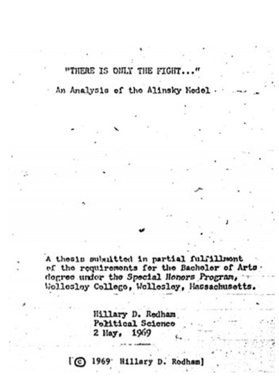

比起没有见过阿林斯基的奥马巴，希拉里与阿林斯基的交往更早、更直接，也更隐秘。作为一位聪明的实用主义者，她可能比任何人都更接近阿林斯基的本来面目。
被封存的论文
奥巴马政府的国务卿希拉里·克林顿，曾经在1968年对阿林斯基做过访谈，撰写过以阿林斯基为主题的大学毕业论文，被称为“阿林斯基的女儿”。比起没有见过阿林斯基的奥巴马，希拉里与阿林斯基的交往更早、更直接，也更隐秘，因为她在其政治生涯中所显示的高度实用主义，在相当程度上遮蔽了她与阿林斯基的思想联系。
在1968年那个火热的革命之夏，希拉里·罗德汉姆与阿林斯基见面。在随后撰写的毕业论文中，她以阿林斯基为题，将阿林斯基描绘为具有“特殊魅力”(exceptional charm)的人物。论文几乎每一页都有阿林斯基的名字出现。这篇论文在1993年由克林顿总统下令封存，直到2001年才解禁。现在读到的她的论文复印件，连同2003年出版的自传《亲历历史》，是为数不多的有关希拉里与阿林斯基思想关联的分析文本。
最近几年，阿林斯基主义的思想和修辞越来越多地出现在希拉里的讲话里，从中可以解读出美国奥巴马-克林顿政府政策的思想根源。然而，与奥巴马跟阿林斯基发生在社区运动的重合不同，希拉里与阿林斯基之间的这种思想联系，是两人所共同的实用主义，而非激进主义，就像《激进主义者守则》这本书的副题所暗示的：“给现实主义的激进者的一个实用主义入门。”
希拉里的论文导师Alan Schechter教授，将希拉里的论文评为“A”等，后来两人成为朋友，希拉里·克林顿竞选参议员时，Schechter出任顾问，2007年，Schechter对媒体提起他曾经的学生：“她根本不是一个激进者，我想她很主流，她是一个实用主义者……她是一个非常有思想、小心的实用主义者。”1969年毕业后，希拉里拒绝了阿林斯基为她提供的在产业地区基金会（IAF）的职位，选择了法学院，沿着中产阶级的道路进入社会主流。Schechter 2007年的这番表白，显然是有意识地在公众面前拉开希拉里与阿林斯基的距离。事实上，在身为第一夫人期间，希拉里两次出席IAF有关的活动，也允许IAF使用她的名字募款。
在1969年这篇长达92页的论文里，希拉里·罗德汉姆援引阿林斯基1967年的一篇演讲：“大部分人都曾经或者正在害怕为自由付出代价，所以自由就是避免这种责任的自由。自由的人就是一个要摆脱陆栖的和历时性的存在即所谓安全和现状，而开始冒险进入一种生活，充满着感情、梦想、风险、危险、创造性工作，以及随变化而变革的能力。”1969年，希拉里在韦斯理学院的毕业典礼上的发言表达得更直接，“恐惧总是伴随着我们，只是我们没有时间（恐惧）”，因为我们要行动。
希拉里·罗德汉姆在论文中所关注的，阿林斯基为他的社区斗争所强调的，是穷人们“不是缺乏金钱，而是缺乏权力”。她承认，“如果阿林斯基拥护的理想得以实现，不啻为一场社会革命。”
实用主义者希拉里
希拉里在2003年出版的自传中说，虽然她认同阿林斯基的部分理念，但是根本不赞同阿林斯基。但即便在这样的措辞中，希拉里·克林顿还是承认，她与阿林斯基的这种不同，区别只在于她相信变革可能从系统内部发生，而不是阿林斯基坚持的可以从外部改变，这是她后来选择法学院的原因之一。这种“内部变革”的信念，可以说是理解希拉里·克林顿政治生涯的关键。作为一位极其聪明的实用主义者，她可能比任何人都更接近阿林斯基的本来面目——高度现实主义的激进主义者。
1993年克林顿当选总统后不久，希拉里·克林顿在接受《华盛顿邮报》的采访时，袒露心曲：“基本上我觉得（阿林斯基）是对的……我已经为之奋斗了25年。”十年后出版的《亲历历史》中，“革命”一词总共出现了21次，而且都是肯定含义，激进的(radical)出现11次，共同体(community)33次，社会(society)33次。如果把革命与激进两词的使用频率相加，与共同体和社会的频率几乎没有差别。
显然，在希拉里·克林顿的政治生涯回忆中，革命或者激进，与共同体和社会具有同等重要性，阿林斯基的激进主义被克林顿以社会革命的修辞继承了下来，这或许就是她的实用主义，在担任国务卿后，这些词仍然是最常见的。

希拉里在韦斯理学院的毕业论文。她把阿林斯基描写为具有特殊魅力的人物。该论文在1993年由克林顿总统下令封存，直到2001年才解禁。
以自我利益为核心
在阿林斯基的社区组织运动中，一开始就从现实主义的人性出发，以自我利益(self-interest)的诉求，来争取基层神父的支持，获得普通人的支持，这是阿林斯基的激进主义与马克思主义或者当时的社会主义的最大区别。1969年1月，阿林斯基接受希拉里·罗德汉姆邀请到韦斯理学院与学生见面，他还反复告诫这些激进学生“不要拒绝中产阶级的价值”。自我利益，贯穿阿林斯基主义的始终，也作为社区建设策略和产业地区基金会（IAF）培训的中心概念被推广，直至今天。奥巴马在芝加哥参与ACORN的培训，也是以自我利益为中心概念。这是阿林斯基主义的现实主义的核心，借此进行社团动员、联结起教会和社区组织，获得天主教会最大限度的政治认同和联盟。
今天，阿林斯基风格的全国性社区组织大范围地影响了美国的城市居民，其中，约42%的组织者和33%的聚会是天主教的，包括耶稣会的John Baumann 所领导的“太平洋社区组织研究所”(Pacific Institute of Community Organizing)、卡麦利基金会的Greg Galluzzo（天主教徒、前耶稣会信徒）和IAF的钱伯斯（年轻时是天主教神学院学生），更不用说像天主教人类发展战斗(Catholic Campaign for Human Development, CCHD)这样直接参与和资助社区建设的全国性天主教组织。
奥巴马1980年代曾经服务于卡麦利基金会和CCHD所支持的“投票项目”计划，到2001年，他提出建立基于信仰(faith-based)的组织，通过推动社区的信仰组织建设，重建国家-教会的关系，赢得宗教界的赞扬，并帮助他赢得了2005年参议员选举。
阿林斯基的“政治柔道”
阿林斯基主义的第三个层次，关于抗争策略或社会运动战术，也被称作阿林斯基特有的“政治柔道”。阿林斯基的最后一本著作《激进主义者守则》，就是他毕生战术思想的总结，也是阿林斯基主义的精华。
“守则”围绕着两个中心问题：如何组织和运用权力，如何有效地进行抗争。前者，基于阿林斯基相信能够从外部进行社区组织的动员，强调组织者的重要性。一方面，他认为在现有的法律边界内，道德和规范的力量是社区组织的力量，也就是人民的力量；不过，这种力量既依靠社区，更依靠组织者敢于冒险的社会企业家精神。
而后者，有关对抗主义的具体技巧，通过选择固定目标、个人化的极端模式，进行摩擦式的运动，以保持冲突。阿林斯基自己说过，这是从工业组织委员会（CIO）的工运领袖刘易斯学习得来的。刘易斯总是避免直接攻击公司，而是攻击具体的资本家，这样既有助于保持冲突的合法性和持续性，又足够激进和有效。
具体来说，社区组织者除了要有好奇心、不逊（阿林斯基自己就是一位待人不逊的典型）、想象力、幽默感等特质之外，还应有对未来更好世界的一些模糊愿景、一个组织人格、一个政治的精神分裂者却又能够自我调适、一个自由开放的心灵和一个政治相对主义者、经常能够推陈出新。
这种社区组织者，正如前述他所说的“自由的人”，也是他的《激进主义者守则》中的“激进者”，他后来创办专门的研究所，就是为了培养这样的人——奥巴马就是这样一位从社区组织者成长为美国总统的超级社会企业家。
不过，需要指出的是，奥巴马从自身的经验中发现，也许必须依靠本土或者内生的组织者，而不是外部的组织者，才能真正做到永远跟社区人民在一起，然后使“变革从草根发生”。当然，尽管如此，阿林斯基风格的NGO仍然不可或缺，奥巴马上任后，通过一项法案向此类组织拨款达两亿美元，扶持社区组织发展，“现在就改革社区组织协会”（ACORN）位列前茅。
阿林斯基主义与“巧实力”
通常来说，直接将政治思想与实际政策联系起来，甚至以前者推断后者，显得过于冒险，但是如果沿着阿林斯基主义的三个层面激进主义-现实主义-战术依次推进，在阿林斯基本人最为精湛的战术思想层面上探讨其思想传人或代理人并实际延伸到今天奥巴马-克林顿政府政策背后可能的思想逻辑，完全可能而且必要。
奥巴马曾引述阿林斯基的教导，为了成功有效，可以“说谎，掩饰，挖苦和嘲笑你的对手……等等一切可做的……操纵道德……”同样，他在高度现实主义的同时，也“很有进攻性和对峙性，如果需要的话”。Kruglik对奥巴马的这一评价，拿来概括过去几年奥巴马政府的内政外交政策，可能再合适不过了。
比如说，当奥巴马面临连任选举之际，没有理由怀疑这位被美国媒体评论为“可能是美国历史上最聪明的总统”会输掉选举，就像他在2008年曾经创造性地大规模运用新媒体赢得选战一样。问题是，连任之后，如果说他在内政事务上难以充分施展“对抗主义”的冲突模式（有消息指出“占领华尔街”运动和民主党高层保持着密切联系，奥巴马总统也曾经亲口表示对该运动的支持）；那么，他必将会把他的娴熟社区组织技巧运用在外交政策上，如“巧实力”战略所展现的。
自克林顿国务卿2009年6月在外交关系委员会听证会上提出“巧实力”(smart power)战略以来，巧实力背后的阿林斯基主义正在改变美国的传统外交模式和政策。
自奥巴马上任以来，从宣布自伊拉克和阿富汗撤军，到2009哥本哈根气候峰会上的灵活外交，再到2011年推动阿拉伯之春、确立重返亚洲战略,以及派遣海豹突击队跨境消灭本·拉登后屡屡采取特种部队解决外交麻烦的手法……相比小布什政府外交政策的备受批评、相比深受欧债危机困扰的欧洲在气候外交等问题的缩手缩脚，美国民主党人所践行的阿林斯基主义正在外交领域表现出前所未有的主动和灵活。
奥巴马政府的外交政策
推及奥巴马-克林顿政府的外交政策，从冲突-运动-组织者-社区的阿林斯基主义进路观察，不难推论出奥巴马政府必然包含着高度的“现实主义的激进主义”，所谓巧实力，便代表着战术中心的、即战术决定战略的对外关系新时代。与小布什政府相比，奥—克政府的激进性包含双重性：面向“新冷战”的冲突性战略框架构建和更多直接行动的战术创新层面。尽管“新冷战”原本是共和党人罗伯特·卡根（Robert Kagan）几年前提出的，至今仍然受到广泛怀疑，然而，对奥巴马-克林顿这两位阿林斯基传人来说，新冷战可能是个再合适不过的战略框架，意味着高度现实主义与激进主义对抗的战术性结合，在避免战略性对抗（热战）的前提下，采取阿林斯基主义的逼迫型危机策略，通过激化战术性冲突，并使用战术性手段来构建对抗主义的双边关系或地缘政治主轴。
另一方面，奥巴马-克林顿所熟悉的国内政治领域——社区组织，转化为对他国公民社会、互联网自由的战略高度的重视，以之作为战术性冲突和介入的主要领域。相比小布什政府2005年发动但是效果不彰的第一次“阿拉伯之春”（特点是从外部介入），奥巴马-克林顿政府先后撤出伊拉克、阿富汗的军事干预，在利比亚、埃及和叙利亚的内部反叛中所采取的介入行动，显示其更倚重这些国家的内部社区领袖，超越了传统的地缘政治考量。这是奥-克政府社区激进主义的基本体现。